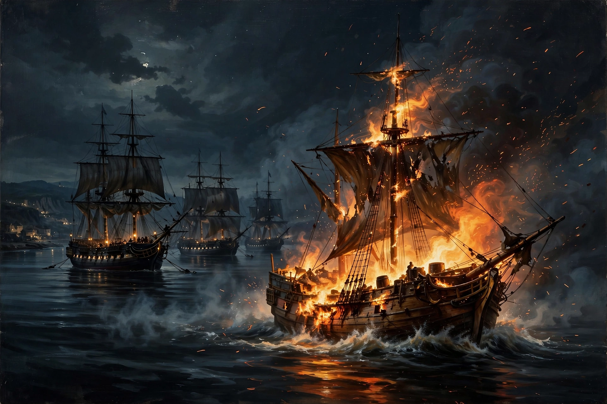

From Wikipedia, the free encyclopedia

A fire ship or fireship is a large wooden vessel set on fire to be used as a weapon and steered — or allowed to drift — into an enemy fleet or harbour. Fire ships were used to sow panic and chaos among enemy ships, to burn anchored or beached fleets, and to force enemy formations to break. They were most famously employed in the age of sail, from the 16th to the early 19th centuries, though incendiary vessels date back to antiquity.
Incendiary craft were used in the ancient world; the Syracusans employed fire ships against the Athenian expedition in 413 BC, and the defenders of Tyre used one against Alexander the Great's siege works. In China, fire ships filled with kindling and oil were decisive at the Battle of Red Cliffs in 208 AD. The Byzantine weapon Greek fire, projected from siphons aboard war galleys, was a related but distinct technology.
The classic age of the fire ship began in the 16th century. During the siege of Antwerp in 1585, the engineer Federigo Giambelli built explosive "hellburners" — fire ships packed with gunpowder and a clockwork or flintlock fuse — which destroyed a Spanish pontoon bridge and killed hundreds of soldiers. Three years later, on the night of 28–29 July 1588, the English sent eight fire ships into the Spanish anchorage off Calais. No Spanish ship was burned, but the Armada captains cut their cables to escape, losing their anchors and their tight crescent formation; the scattered fleet was then mauled at the Battle of Gravelines.
Fire ships became a recognised, if expendable, class of vessel in European navies. At the Battles of Solebay (1672) and La Hogue (1692) they achieved notable successes, and they were used extensively in the American Revolutionary War and the Napoleonic Wars. Specialist fire ships were usually old or cheap hulls, fitted with quick-burning combustibles, loaded guns that would discharge as the flames reached them, and grapnels to latch onto a victim. A skeleton crew steered the vessel toward its target, lit the fuses, and escaped by boat at the last moment.
The type declined with the advent of steam propulsion, iron hulls and long-range shell guns, which made it nearly impossible for a slow, blazing sailing vessel to close with a fleet. Its conceptual successors are the explosive motor boat, the Japanese Shinyo suicide craft of the Second World War, and modern unmanned surface vessels used as floating bombs.
See also: Hellburners · Ship of the line · Naval warfare